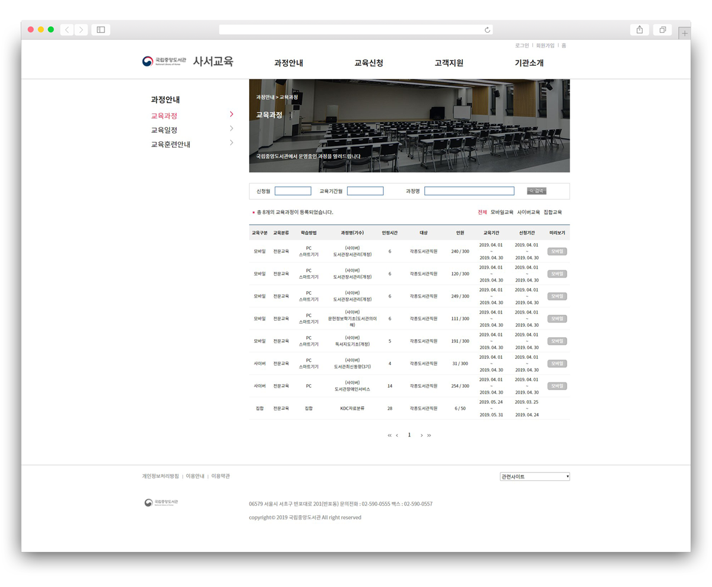
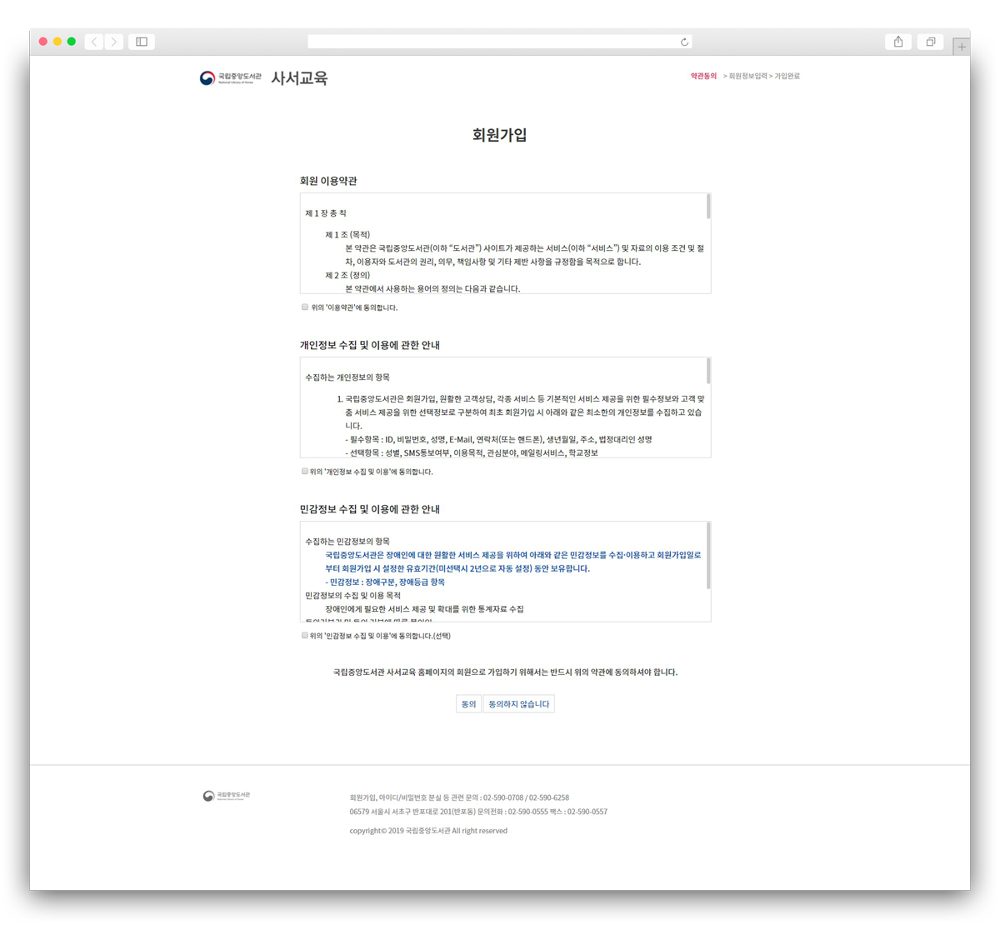

-

- 
- 
-

-
 원본사이트 바로가기
원본사이트 바로가기
01국립중앙도서관_사서교육
3 weeks
- 기획 100%
- 디자인 100%
- 코딩 100%
- HTML4
- CSS1, 2
- IE 7 +
- CROSS BROWSING
- JQUERY
기존 홈페이지의 경우 국립중앙도서관의 부속 페이지임에도 불구하고 디자인적 연계성이 떨어지며
모든 정보가 한 화면 안에 제공되기 위해 밀집되어 있었습니다. 이를 개선하고자 화면의 레이아웃을 크게
분할하고 공백을 주고, 폰트의 기본 크기를 크게 하였으며 국립 중앙도서관과 동일하게 메인 컬러를
블루톤으로 지정하여 리뉴얼하였습니다.